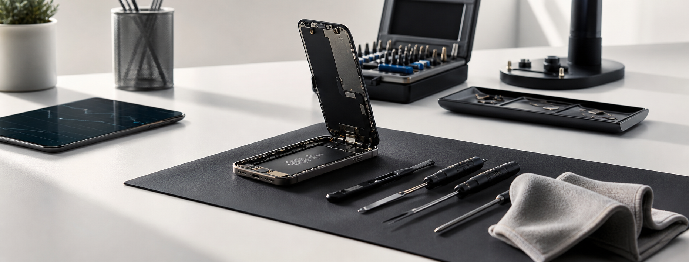
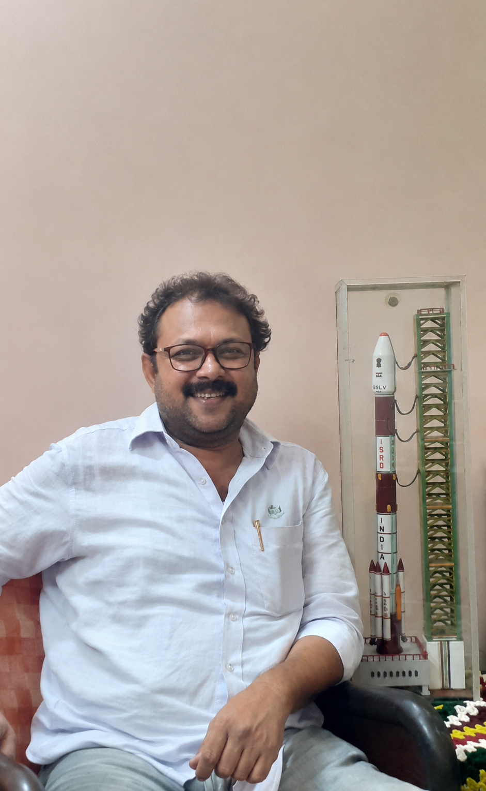
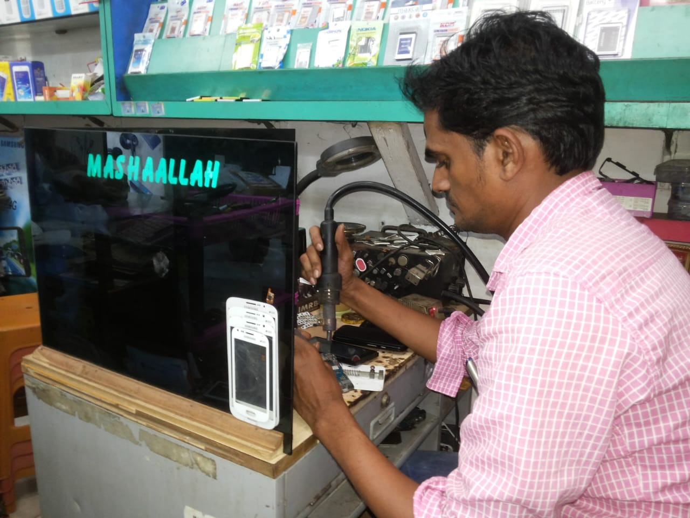
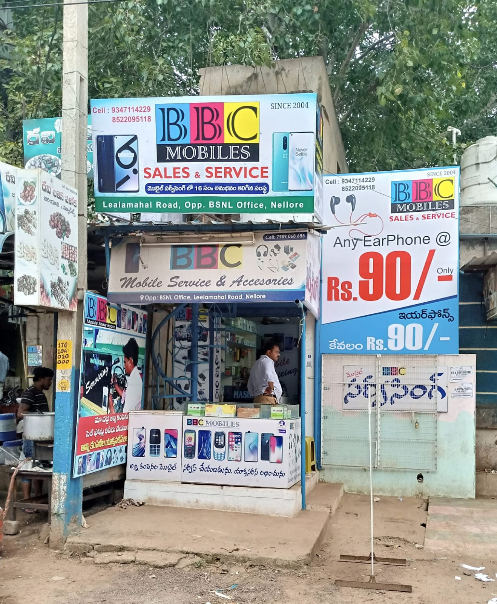
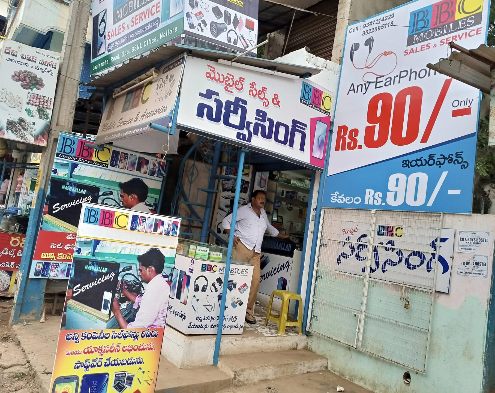
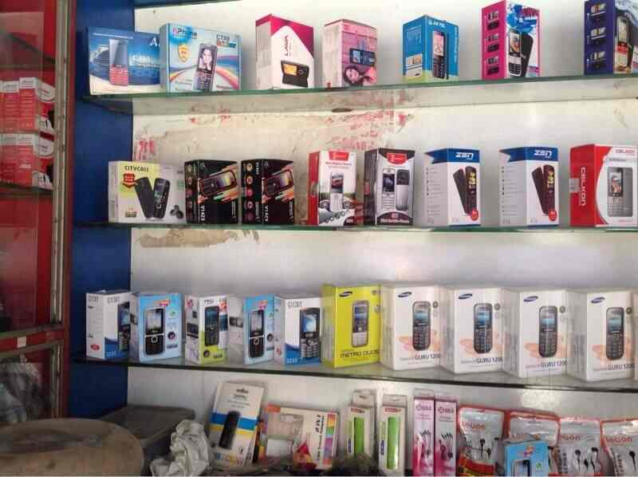
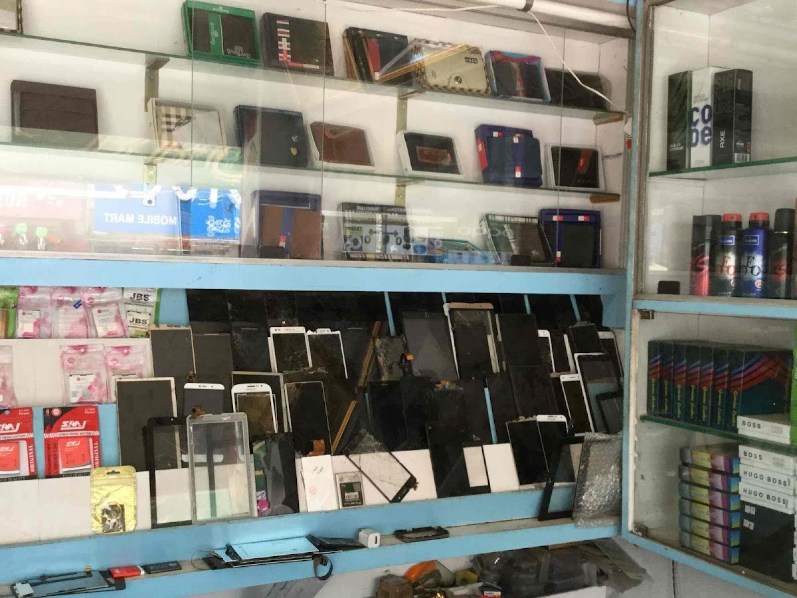
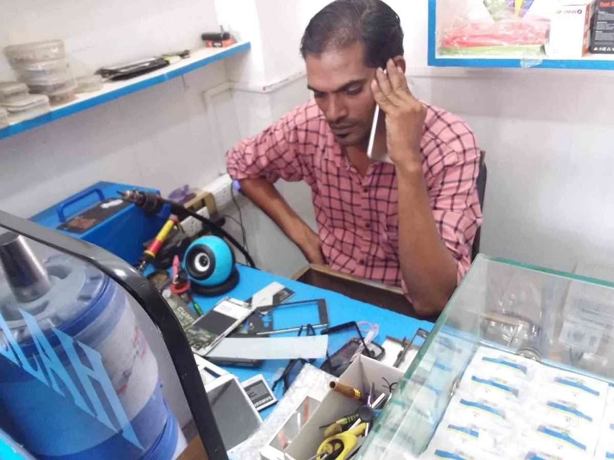
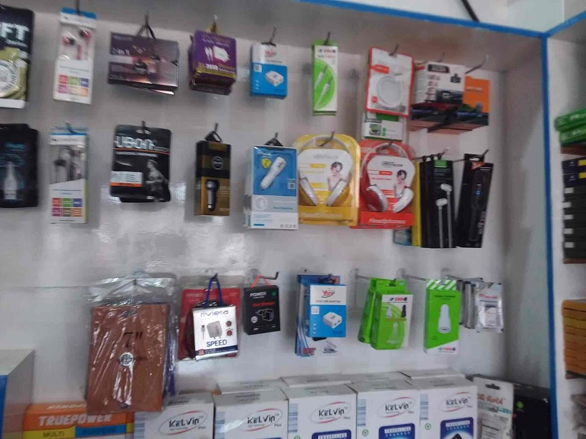
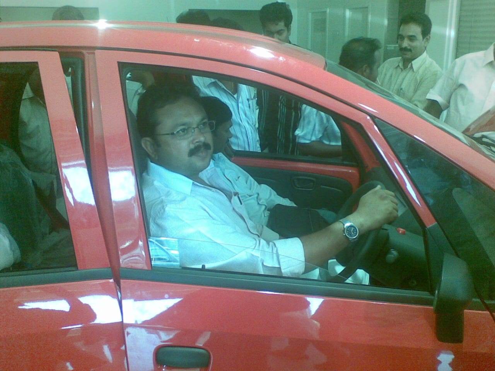

Display and touch
Screen, touch response, glass, and display related service support.
Trust. Repair. Care.
Since 2004 | Nellore
BBC Mobile Service Center handles phone repairs, diagnostics, accessories support, and home pick-up and delivery for customers around Nellore.

Services
Screen, touch response, glass, and display related service support.
Battery health checks, charging port issues, slow charging, and power problems.
Performance issues, updates, app errors, backup guidance, and phone setup help.
Audio, camera, receiver, microphone, and everyday hardware troubleshooting.
Doorstep help
Share your phone model, issue, and location through the assistant. The shop can guide you on repair options and pick-up availability.
Visit
Opposite Lenskart, near Townhall, KVR Nagar corner, Trunk Road, Nellore 524001.
Contact
Send a quick enquiry first. The contact options unlock after the checkpoint so the shop can understand who needs help.
Founder
BBC Mobile Service Center was founded and guided by Shaik Sirajuddin with a simple belief: customers should receive clear advice, careful repair work, and honest support before and after service.

Shaik Sirajuddin
With two decades of business experience in Nellore, Shaik Sirajuddin has shaped the shop around trust, practical guidance, and long-term customer relationships. A naturally creative person with an eye for design, he also brings experience in designer curtains and designer tailoring, along with eight years of work abroad serving and understanding people from different backgrounds. As the son of Mr. Shaik Mastan Shareef, founder of Answer Tailors, Nellore, his early foundation was shaped closely under that guidance, carrying forward a family habit of careful work and customer respect.

Experienced technician
Syed Mohammed Ali brings steady hands-on support backed by a diploma in cell phone service and professional training in basic electronics, cell phone technology, cell phone hardware, and cell phone software. From display issues to charging, battery, speaker, mic, and board-level checks, the team focuses on understanding the problem clearly before suggesting the right service.
Shop photos
Photos from the BBC Mobile Service Center listing show the shop, accessories, display parts, and repair-focused setup customers can expect when they visit.






